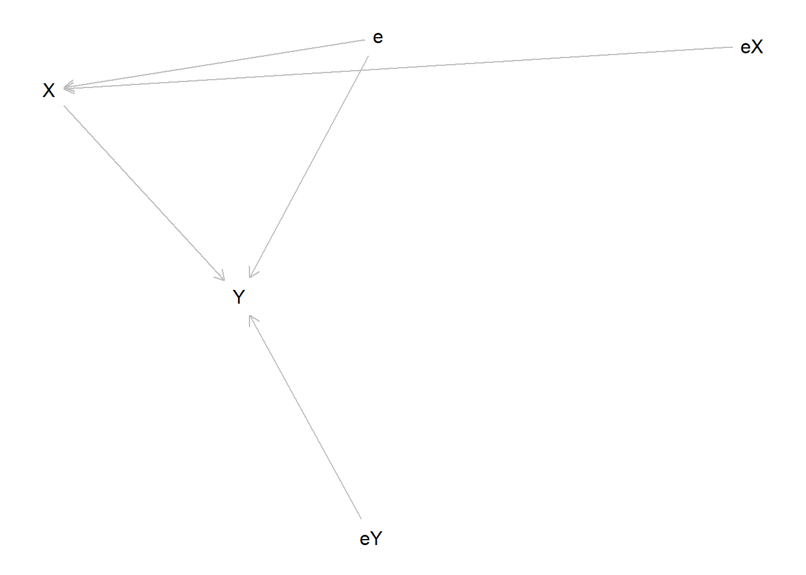
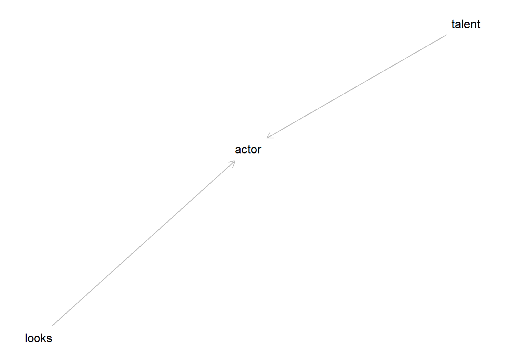
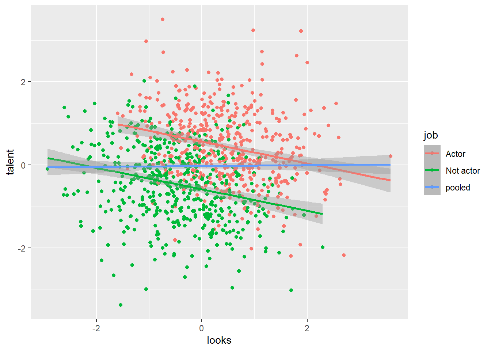

5 Directed Acyclic Graphs
I strongly recommend Paul Hünermund’s notes, and Scott Cunningham’s Causal inference: the mixtape
library(tidyverse)
library(dagitty)g<-dagitty("
dag {
eX->X ->Y
e ->Y<-eY
e->X
}
"
)
plot(g)
print(paths(g,"X","Y"))## $paths
## [1] "X -> Y" "X <- e -> Y"
##
## $open
## [1] TRUE TRUE5.1 Collider bias
g<-dagitty("
dag {
talent->actor
looks->actor
}
"
)
plot(g)
print(paths(g,"looks","talent"))## $paths
## [1] "looks -> actor <- talent"
##
## $open
## [1] FALSE# Simulation
set.seed(42)
talent<-rnorm(1000)
looks<-rnorm(1000)
job<-ifelse((talent+looks)>rnorm(1000),"Actor","Not actor")
(
ggplot()
+geom_point(data=data.frame(talent,looks,job),aes(x=looks,y=talent,color=job,group=job))
+geom_smooth(data=data.frame(talent,looks,job),aes(x=looks,y=talent,color=job,group=job),method="lm")
+geom_smooth(data=data.frame(talent,looks,job),aes(x=looks,y=talent,color="pooled"),method="lm")
)